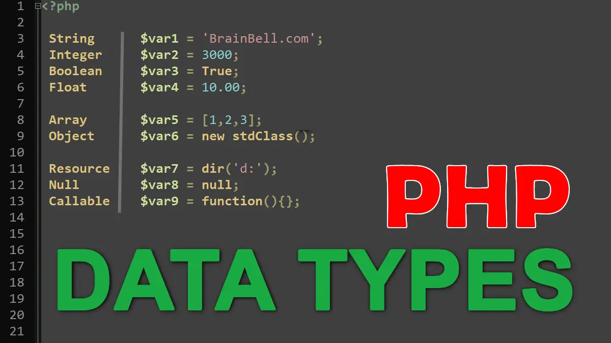

PHP គឺជា ភាសាកូដមួយដែលត្រូវបានប្រើដើម្បីបង្កើនការកំណត់ប្រភេទទិន្នន័យលើបច្ចេកវិទ្យា (Server-Side Scripting)។ នៅពេលនេះ, PHP មានប្រសិទ្ធិភាពធំនឹងត្រូវបានប្រើសំខាន់ដើម្បីបង្កើនការទទួលខុសត្រូវរបស់សេវាកម្មបញ្ហា អាហារប៉ានបត្រ និងបណ្តាញមានសក្ដានុពលទៅកាន់ពាក្យសម្រាប់អ្នកប្រើ។ នៅលើប្រព័ន្ធ Server-Side, PHP អនុវត្តតាមរយៈស៊ីបូមប៉ុងរបស់សេវាកម្មដែលអ្នកប្រើប្រាស់បានបង្កើនបង្កើតនិងរុករកគ្រប់បំណងប្រព័ន្ធដូចជាពេលដែលអ្នកប្រើប្រាស់ដាក់កម្មវិធីមួយនឹងកម្មវិធីដើម្បីប្រើសម្រាប់បន្ថយថ្នាក់ទូរសព្ទរបស់អ្នក។ ជាដំបូង, PHP ត្រូវបានបង្កើនឡើងដើម្បីប្រើសម្រាប់បង្កើនបង្កើតការកំណត់ទិន្នន័យដោយរក្សាទុករបស់សេវាកម្ម។ អ្នកអាចប្រើ PHP ក្នុងកូដ HTML នៅក្នុងឯកសារ HTML ដែលរងនូវកូដ PHP ដូចខាងក្រោម:
កូដនេះបង្ហាញសេវាកម្ម PHP ដែលបង្កើតអថេរ $message និងប្រើ echo ដើម្បីបង្ហាញអថេរនៅលើ HTML ទៅជាប្រសិទ្ធភាសាទំនាក់ទំនង។ ផ្ទុកទិន្នន័យតាមរយៈសំបុត្រ HTML បញ្ចូលពួកវាទៅក្នុងរយៈពេលដែលអ្នកប្រើប្រាស់បង្កើតស៊ីបូមប៉ុងដើម្បីដំឡើងអ្វីដែលអ្នកចង់កំណត់។ ទាំងនេះគឺបណ្តាលងាយស្រួលនៃរចនាករណ៍របស់ PHP។ តាមដានដ៏ប្រចាំ, PHP
PHP (Hypertext Preprocessor) ជា ភាសាកូដដែលមានដើមក្នុង HTML ដើម្បីបង្កើតទំព័របណ្តាញរបស់អ្នក។ សញ្ញាបន្ថែមរវាង PHP និង HTML អាចត្រូវបានសរសេរក្នុងឯកសារដែលមានចំណេះដឹងក្នុងគេហទំព័រ។ ចូរមើលឧទាហរណ៍ខាងក្រោមនេះដើម្បីប្រការប្រើក្នុង PHP:
// Create boolean variables bool isProgrammingFun = true; bool isFishTasty = false; // Return boolean values printf("%d", isProgrammingFun); // Returns 1 (true) printf("%d", isFishTasty); // Returns 0 (false)
ក្នុងភាសាបង្ហាញលើបំពេញកូដកម្មវិធីទូទៅដែលក្រុមហ៊ុន PHP ត្រូវប្រើ, អ្នកនឹងស្រលាញ់ទុក្ខបុកបុនដល់អថេរបន្ថែមរបស់អ្នក។ ក្នុង PHP, អថេរត្រូវបានប្រើដើម្បីទុក្ខបុកបុនទិន្នន័យជាដំណើរការក្នុងកូដ។ អ្នកអាចប្រើប្រាស់ទំព័រអថេរដើម្បីទុក្ខបុកបុនតម្លៃនៃទិន្នន័យ។ ប្រភេទនៃអថេរត្រូវបានកំណត់ដោយប្រើប្រាស់ផ្នែកខាងក្រោមនៃកូដ:
$name = "John";
$age = 25;
$height = 1.75;
$isStudent = true;
ក្នុងឧទាហរណ៍នេះ, $name ត្រូវបានកំណត់ជាអថេរដោយឈ្មោះ "John"។ $age ត្រូវបានកំណត់ជាអថេរដោយលេខដូចគ្នា 25។ $height ត្រូវបានកំណត់ជាអថេរដោយចំនួនទសភាគ 1.75។ $isStudent ត្រូវបានកំណត់ជាអថេរដោយតួនាទីថ្មីៗ។ ទាំងនេះគឺជាឧទាហរណ៍បែបនេះប្រើប្រាស់ក្នុងកូដ PHP។ ប្រភេទនៃអថេរអាចត្រូវបានប្រើដើម្បីទុក្ខបុកបុនទិន្នន័យនិងប្រើជាតម្លៃក្នុងកូដដែលត្រូវប្រើ។
កំណត់យកពីវិធីក្នុងកូដដើម្បីពន្លាការពាក្យហៅនៅក្នុងកូដជាច្រើនវិធីជាដំបូងនៃការបង្កើតកូដជំនួសក្នុងកូដទិន្នន័យចំពោះកម្មវិធីអេឡិចត្រូនិកដែលត្រូវបានប្រើជាមួយនឹងអនុវត្តន៍វិញ។ ពណ៌នា "comment" ក្នុងកូដជាមួយទូទៅមានសម្រាប់វិធីសាស្រ្តបណ្តាញអេឡិចត្រូនិក។ នៅក្នុង PHP, យើងអាចប្រើពាក្យហៅដើម្បីបង្កើតកូដជំនួសនៅក្នុងកូដដោយប្រើគ្រប់គ្រងស្តាំងដែលមានលក្ខណៈ // ឬ /* */។ គ្រប់គ្រងស្តាំង (//)
// នេះជា សេចក្ដីអនុវត្ត ក្នុង C++
int x = 5;
// បែងចែកលទ្ធផលទីផ្សារទីមួយដោយ 5
// បញ្ជូនប្រភេទ string ពីទំព័រ HTML
$name = "John Doe";
// បង្ហាញអថេរប្រភេទ string
echo $name;
// ករណីបញ្ជូន string ក្នុងទំព័រ HTML
echo "
នៅទីនេះ, $name ត្រូវបានប្រើជា string ដែលមានអក្សរ "John Doe"។ ដើម្បីបង្ហាញតាមទំព័រ HTML, យើងប្រើ echo ដើម្បីបង្ហាញអថេរប្រភេទ string ជា HTML និងបញ្ជូនទៅលើអេឡិចត្រូនិច។ សូមពិនិត្យមើលការប្រើប្រាស់ string នៅក្នុងកូដ PHP ផ្សេងៗទៀតដើម្បីទាញយកព័ត៌មានបន្ថែម។
នៅក្នុងភាសា PHP, echo និង print ជាប្រភេទមួយនៃសញ្ញាដែលត្រូវបានប្រើដើម្បីបង្ហាញទិន្នន័យនៅលើអេកូពិភពលោក។ ទាំងពីរក្រោមបង្ហាញទិន្នន័យទៅក្នុងអេកូ:
នៅលើកូដខាងលើ, echo ត្រូវបានប្រើដើម្បីបង្ហាញលទ្ធផលនៃអថេរ $message ទៅលើអេកូ។ សញ្ញាទាំងពីរគឺអាចប្រើនៅក្នុងជួប HTML ឬគោលបំណងចន្លោះ ។ បង្ហាញដោយប្រើ print:
javaScript W3School
ក្នុង PHP, តាមប្រភេទទិន្នន័យដែលអ្នកអាចប្រើដើម្បីបង្កើនតម្លៃនិងរក្សាទុកទិន្នន័យប៉ុណ្ណោះសំខាន់ៗ។ នៅលើកទីនេះ, និងក្នុងប្រភេទទិន្នន័យនៃ PHP សំខាន់គឺ: អថេរ (Variables): ប្រើដើម្បីទិន្នន័យបន្ថែមនិងរក្សាទុកតាមដំបូង។ តម្លៃនៃអថេរអាចផ្លាស់ប្ដូរបាននៅពេលក្រោយ។
$name = "John"; $age = 25;
ប្រភេទទិន្នន័យចំណេះដឹង (Data Types): PHP បានផ្តល់បណ្តាញអ្វីដែលហៅថា "ប្រភេទទិន្នន័យ" សម្រាប់ទិន្នន័យដែលអាចត្រូវបានបញ្ជូន។ ប្រភេទទិន្នន័យត្រូវបានជំនួសទាំងបី៖ តួនាទី (int): ប្រើដើម្បីបង្កើតប្រភេទទិន្នន័យដែលមានតម្លៃគត់។
$count = 10;
ចំនួនទសភាគ (float): ប្រើដើម្បីបង្កើតប្រភេទទិន្នន័យដែលមានតម្លៃចំនួនទសភាគ។
$price = 15.99;
តួនាទីចន្លោះ (string): ប្រើដើម្បីបង្កើតប្រភេទទិន្នន័យដែលបញ្ជូនជាអត្ថបទ។
$message = "Hello, World!";
ខ្សែក្រោម (boolean): ប្រើដើម្បីបង្កើតទិន្នន័យដែលមានតម្លៃជាប់ឬមិនប់។
$is_active = true;
អត្ថបទផ្ទាល់ខ្លួន (null): ប្រើដើម្បីបង្កើតប្រភេទទិន្នន័យដែលមានតម្លៃជាទិន្នន័យខ្លួនឯង។
$result = null;
